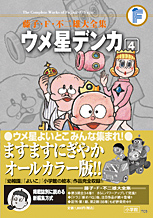

| |

＜小学一年生、幼稚園、よいこ、
小学館の絵本掲載集＞
定価：本体1,800円＋税
A5判／384ページ
オールカラーで収録！
好評発売中！
★は初めて単行本に収録される
作品です。
※収録内容は変更になる
場合があります。

|
| ウメ星デンカあらわれる（小学一年生1968年9月号） |
| どろぼうってなあに（小学一年生1968年10月号） |
| ★デンカのハイキング（小学一年生1968年11月号） |
| ★運動会（小学一年生1968年11月号別冊付録） |
★絵が本物になるカメラ
（小学一年生1968年12月号） |
| まいごになった王さま（小学一年生1969年1月号） |
| お城を買おう（小学一年生1969年2月号） |
| ★とうめい太郎（小学一年生1969年3月号） |
| ★デンカの飛行機（小学一年生1969年4月号） |
| ナラ子のおみやげ（小学一年生1969年5月号） |
| ★小鳥の巣箱（小学一年生1969年6月号） |
| ★春？夏？秋？冬？（小学一年生1969年7月号） |
| ★海水浴（小学一年生1969年8月号） |
| ★ノートをさがせ（小学一年生1969年9月号） |
| 小さな町の小さな太郎（小学一年生1969年10月号） |
| マジックコート（小学一年生1969年11月号） |
★ベニショーガのサンタ
（小学一年生1969年12月号） |
| ★王さま、デンカになる（小学一年生1970年1月号） |
| ★わらいガス（小学一年生1970年2月号） |
| ★あたらしい友だち（幼稚園1968年10月号） |
| ★わーい飛んだ（幼稚園1968年11月号） |
| ★大きくなる光（幼稚園1968年12月号） |
| ★たこあげ（幼稚園1969年1月号） |
| ★さがしもの（幼稚園1969年2月号） |
| ★ウメ星のロボット（幼稚園1969年3月号） |
| ★ハイキング（幼稚園1969年4月号） |
|
| ★宇宙旅行（幼稚園1969年5月号） |
| ★お天気にしたい（幼稚園1969年6月号） |
| ★ウメ星のてぶくろ（幼稚園1969年7月号） |
| ★山のぼり（幼稚園1969年8月号） |
| ★台風（幼稚園1969年9月号） |
| ★ウメ星のくつ（幼稚園1969年10月号） |
| ★ウメ星のり（幼稚園1969年11月号） |
| ★大そうじ（幼稚園1969年12月号） |
＜よいこ編＞
|
| ★デンカがやってきた（よいこ1968年10月号） |
| ★ふしぎなカメ（よいこ1968年11月号） |
| ★わすれられた弁当（よいこ1968年12月号） |
| ★ふくわらい（よいこ1969年1月号） |
| ★どうぶつを作ろう（よいこ1969年2月号） |
| ★おままごとの引っこし（よいこ1969年3月号） |
| ★風船そうどう（よいこ1969年4月号） |
| ★こいのぼり（よいこ1969年5月号） |
| ★ふしぎな電気（よいこ1969年6月号） |
| ★たなばた（よいこ1969年7月号） |
| ★お庭で海水浴（よいこ1969年8月号） |
| ★太郎、魚に！（よいこ1969年9月号） |
| ★魚を泳がせよう（よいこ1969年10月号） |
| ★おみこしのお手伝い!?（よいこ1969年11月号） |
| ★もちつき（よいこ1969年12月号） |
| ★おりがみゆうえんち（小学館の絵本 No.23） |
| ★でんしゃごっこ（小学館の絵本 No.27） |
| デンカのなぞなぞ |
|